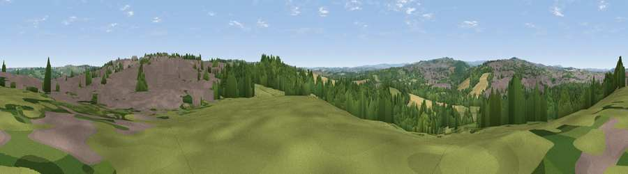

Viewpoint near Killamarsh
#27595 in England · top 43% of its area beats it · near Killamarsh · footpathWhere it is
The exact computed spot (SK 44925 80125). Click the marker for map links.
Public access: a public right of way passes within 56 m of this spot. Computed from Natural England's CRoW access layer and OpenStreetMap rights of way — not the legal definitive map. Always verify locally.
The view, rendered

A 360° render of this exact spot computed from the terrain model, tree cover and land cover — summer colours, afternoon light, calibrated against photographs of famous viewpoints. Real trees, hedges and buildings will differ in detail.
The panorama
Grey silhouette: terrain skyline in each direction (720 bearings, Earth curvature and refraction included). Dashed green: skyline with trees (+15 m) and buildings (+8 m) as obstacles. Blue strip: how far the ground is visible on each bearing.
Where the view opens
Wedge length = distance to the farthest visible ground on that bearing (vegetation-aware). Rings at 10, 25 and 50 km.
What fills the view
35% woodland · 29% built-up · 23% grassland · 13% cropland · 1% water
Angular shares of the visible panorama (visual magnitude), not map area. Landscape diversity 0.60 (0–1 Shannon).
Key numbers
More beautiful places nearby
The staircase of upgrades: each row has a higher view potential than everything closer. Driving times are estimates from straight-line distance, calibrated against real road routing — check an actual route before setting out.
| Place | Direction | Drive | Score |
|---|---|---|---|
| Viewpoint near Killamarsh | ENE · 2 km | ~5 min | 45.9 |
| Viewpoint near Ridgeway | WNW · 4 km | ~9 min | 47.4 |
| Viewpoint near Marsh Lane | W · 5 km | ~11 min | 52.4 |
| Viewpoint near Marsh Lane | WSW · 5 km | ~11 min | 53.8 |
| Viewpoint near Ridgeway | WNW · 5 km | ~12 min | 67.6 |
| Viewpoint near Maltby | NE · 16 km | ~28 min | 70.7 |
| Viewpoint near Hathersage | W · 20 km | ~34 min | 70.9 |
| Viewpoint near Whitley | NW · 20 km | ~34 min | 72.1 |
53.31616, -1.32712 · source: screening · position refined by local search. Computed location — check access rights before visiting.